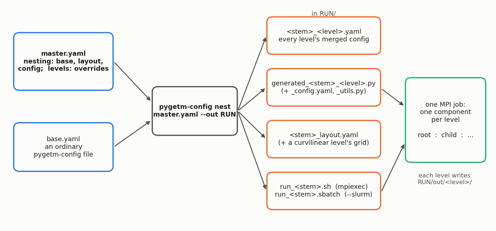
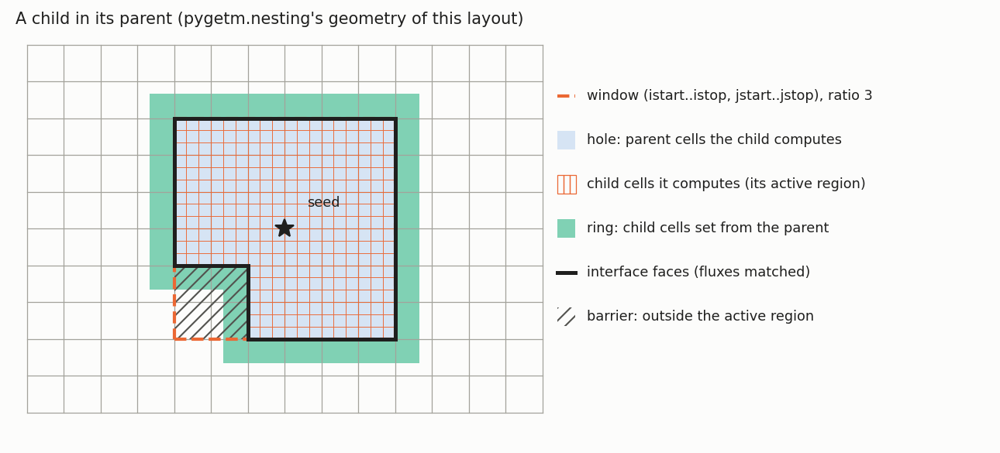
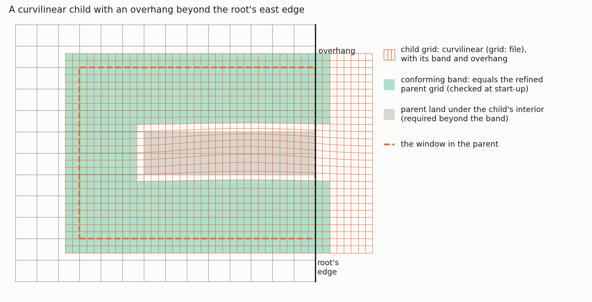
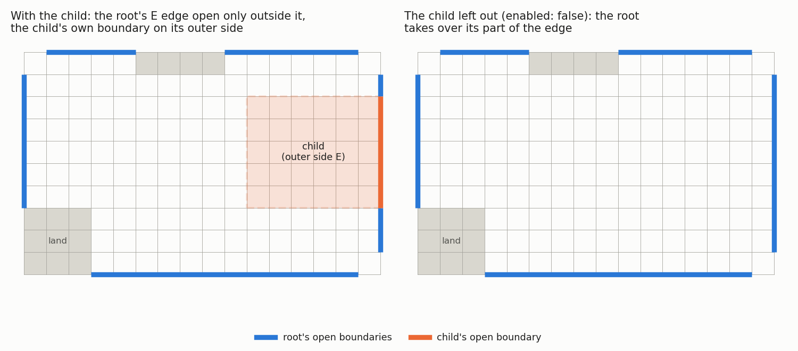

Nested setups
pygetm-config nest builds a nested setup: several pyGETM models (levels) that run together with the two-way nesting
of the pyGETM fork (bolding/pygetm, branch nesting-mpmd, package pygetm.nesting). A root covers the whole region,
children refine rectangular windows of their parent (by an integer ratio, with an integer time ratio), grandchildren
refine their children, and so on. Every level is an ordinary pyGETM simulation with its own processes; they are
launched as one MPI job, one component per level.
This is opt-in: a single-model configuration is unaffected. The scripts need the fork installed; --configs-only
writes only the level configurations and works without pyGETM.
The master file
One YAML file describes the whole nest:
nesting:
base: base.yaml # an ordinary pygetm-config file every level starts from (relative to this file)
layout: # the levels' geometry (pygetm.nesting's layout format)
root: {nx: 255, ny: 196, lon0: -16.0, lat0: 43.0, dlon: 0.1, dlat: 0.06}
fine: {parent: root, istart: 120, istop: 180, jstart: 90, jstop: 140, ratio: 3,
active: {seed: [8.5, 55.6]}}
config: {interface_min_depth: 2.0}
levels:
root:
nesting: {processes: 4, open_boundaries: {type_2d: FLATHER_TRANSPORT, type_3d: ZERO_GRADIENT}}
data_assignments: [...] # e.g. TPXO at the open boundaries
fine: # only what differs from the base
domain: {BathymetryFile: {path: "${BATHYMETRY_FOLDER}/fine_bathymetry.nc"}}
runtime: {timestep: 6.0}
nesting: {processes: 2, sponge_width: 1.0, min_depth: 2.0}

A level's configuration is the base with the level's overrides merged in: mappings merge key by key, lists and values
replace (so a data_assignments list in a level replaces the base's whole list), and null removes a key. The level's
nesting: block holds options of the coupling and of the level's set-up (below); it is not part of its pyGETM
configuration.
levels.<name>.enabled: false leaves a level out, with all levels below it; its parent then computes the window
itself. The root cannot be left out.
The layout
nesting.layout is pygetm.nesting's layout: per level nx, ny, lon0, lat0, dlon, dlat (the root), or parent,
istart, istop, jstart, jstop, ratio and optionally time_ratio (default: the ratio) and active (the active
region: seeds and barriers) for a child. Optional per child:

A child (ratio 3) in its parent: the window, the active region grown from a seed and cut by a barrier, the parent's
hole under it, the child's ring of cells set from the parent, and the interface faces where the fluxes are matched.
Drawn with pygetm.nesting's own geometry (docs/figures/make_nesting_figures.py).
grid: a curvilinear level, a.npzfile with its supergridx,y(window and band, in the layout's units), the path relative to the master file. Near its interface it must coincide with the refined parent grid, and the parent must be land under its interior beyond that band (pygetm.nesting checks both at start-up).overhang: [w, e, s, n]: a curvilinear level that continues beyond its window (e.g. out of the root).

A curvilinear child: near its interface (the conforming band) its grid is the refined parent grid; inside it is free, over parent land; with an overhang it continues beyond the root's edge.
nesting.config holds the layout's settings: interface_min_depth (interfaces kept out of water that floods and dries),
and for Cartesian levels coriolis and xy_unit (below).
A level's nesting: block
| Option | Meaning |
|---|---|
processes |
MPI processes of the level (default 1) |
min_depth |
cells shallower than this are land (as Domain.mask_shallow), before the nesting's consistency |
limit_velocity_depth |
Domain.limit_velocity_depth() on the level's domain |
open_boundaries |
open boundaries along every wet stretch of the level's outer edges (below) |
sponge_width, sponge_alpha |
the damping inside a child's interface (Nested2D); needed when a child sub-steps |
tracers |
the 3D tracers exchanged (default: temperature, salinity and FABM's pelagic state) |
remap_scheme |
ppm (default) or pcm: the vertical remap at this child's interface |
ring_slopes, ring_time |
the 3D ring linear within each parent cell; hold or extrapolate over a child's 3D sub-steps (the same on all levels) |
Domains and depths
Each level's grid is the layout's; only its depth comes from the configuration, from its domain: BathymetryFile, the
one domain method of a nested level:
- spherical levels:
lon_variable,lat_variable; - Cartesian levels:
x_variable,y_variablein metres. The layout may use other units:nesting.config.xy_unitgives metres per layout unit (e.g. 1000 for a layout in km).nesting.config.coriolisis the Coriolis parameter of the f-plane (required; 0 for none).
All levels are of one kind. The file must lie on the level's grid; a file larger by the same number of cells on every
side (ocean-prep's level files carry a band of 2 cells) is cut. The depths are read by pygetm.nesting's own reader
(pygetm.nesting.bathymetry.read_level_depth) and made consistent between the levels when the run starts.
Open boundaries
A level's nesting: {open_boundaries: {type_2d: ..., type_3d: ..., sides: ...}} adds open boundaries when the run
starts, along every wet stretch of its outer edges: the root's edges, and a child's sides that lie on the root's edge
(its window reaching it); without the cells the level does not compute (a parent's hole, the part of its edge a child
owns). type_2d and type_3d are names of pyGETM's boundary types (FLATHER_TRANSPORT, FLATHER_ELEV, CLAMPED,
ZERO_GRADIENT, SPONGE); sides (optional, e.g. W) opens only those edges. Their forcing comes from the level's
data_assignments as for a single model (e.g. TPXO).

Run-time open boundaries along every wet stretch of the edges (land interrupts them, corners are left out where two open sides meet). Left: a child on the root's east edge owns that part; right: the same child left out.
Because the boundaries follow from the levels in the run, a child that owns part of the root's edge can be left out
with enabled: false: the root takes over its part.
Alternatively a level may give its boundaries as an ordinary open_boundaries list (indices on its own grid; a child's
must not be inherited from the base). Then a child that owns part of the root's edge cannot be left out, since the
parent's list was made with it.
Time steps, 3D and restarts
runtime.timestepis a number of seconds: the level's largest stable step. The nesting picks the root step from all levels (a simple fraction of the hour) and gives each level the root step divided by its steps per root step.- In 3D a child's 3D step must be its parent's divided by a whole number: its
split_factormust divide its parent's split factor times its time ratio (checked). - All levels share one run type and the 3D ring options.
- Restart files are per level:
--save-restart restart.ncwritesrestart_<level>.nc(or put{level}in the path). Snapshots are taken at times (save_restart_interval_unitsin time units, not steps). A restart written with another set of levels, windows or ratios is refused. --stopmust fall on a whole root step.
Output
Every level writes into its own folder: <output.folder>/<level> (or <level> in the run directory if the base sets
no folder), unless its overrides set output.folder themselves. Two levels writing into one folder are refused.
Running pygetm-config nest
pygetm-config nest master.yaml --out RUN [--validate] [--configs-only]
[--python python3] [--mpiexec mpiexec] [--bind core|hwthread [--mpi mpich|openmpi]]
[--slurm --partition P --time 02:00:00 --nodes N --account A --setup 'conda activate pygetm-nesting']
writes into RUN:
<stem>_<level>.yaml: every level's merged configuration, a complete pygetm-config file (pygetm-config validateworks on it); generated: edit the master;<stem>_layout.yaml: the layout (with a curvilinear level's grid file copied next to it);generated_<stem>_<level>.py(+_config.yaml,_utils.py): each level's run script;run_<stem>.sh: the launch, onempiexeccomponent per level; its arguments go to every level's script (--stop,--save-restart,--data-root NAME=VALUE, ...);- with
--slurm:run_<stem>.sbatch, a Slurm job starting the levels withsrun --multi-prog. Submit it from the run directory with the scripts' arguments:cd RUN && sbatch run_<stem>.sbatch --stop 2020-01-02T00:00:00.
--bind core (or hwthread) pins every level to its own block of cores, in both scripts (--mpi gives mpiexec's
flags). The launch commands come from the fork's pygetm.nesting.launch, which pygetm-nesting's nesting-balance
uses too.
The launch scripts change to the run directory first: give --data-root folders as absolute paths
(OUTPUT_FOLDER=$PWD/RUN/out).
nest checks the master before writing anything: the layout (pygetm.nesting's own checks), the levels against it, the
options and their values, the rules above.
Examples
pygetm-nesting (bolding/pygetm-nesting, not public yet) generates the masters of its setups with
pygetm_nesting.config_master:
NEAB/config/pygetm-config (5 spherical levels; bit-identical to NEAB's own nested models), DKm/config/pygetm-config
(9 levels, children with their own open boundaries; --cores N takes the processes per level from its
nesting-balance), IDEAL/config/pygetm-config (3 Cartesian levels, the layout in km). Their options add ERA5
forcing and, in 3D, initial temperature and salinity from WOA or CMEMS through a pygetm-config provider.